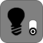

Monumento histórico
Carregando monumento...
Aguarde enquanto as informações do monumento são carregadas.
Navegando no modelo 3D
Aguarde até que o modelo esteja visível. Para melhor funcionamento,
use um navegador atualizado. A barra à esquerda contém as ferramentas
principais do 3DHOP.
Carregando visualizador 3D...





Distância medida
0.00 m
0.00 m
Contexto patrimonial